Introducción
En esta práctica se construye una red conmutada segmentada mediante VLAN (Virtual LAN) con switches Cisco y se habilita comunicación entre redes virtuales mediante enrutamiento inter-VLAN. Se trabaja en tres fases principales: (1) segmentación por VLAN, (2) transporte de VLAN entre switches mediante enlaces troncales IEEE 802.1Q y (3) enrutamiento inter-VLAN mediante router-on-a-stick.
La segmentación por VLAN reduce dominios de broadcast y mejora seguridad y organización. Los enlaces trunk permiten que varias VLAN compartan un mismo enlace físico mediante etiquetado 802.1Q. Finalmente, router-on-a-stick centraliza el enrutamiento de varias VLAN en un único enlace físico creando subinterfaces etiquetadas.
26.0 Creación de la topología
Se crea la topología base en Packet Tracer con tres switches interconectados y seis hosts (dos por switch). En esta fase se valida únicamente la conectividad física (cableado correcto, enlaces activos) antes de introducir segmentación lógica.
Objetivo técnico: disponer de una infraestructura de capa 2 funcional sobre la que aplicar VLAN y trunk sin mezclar problemas físicos con problemas de configuración.
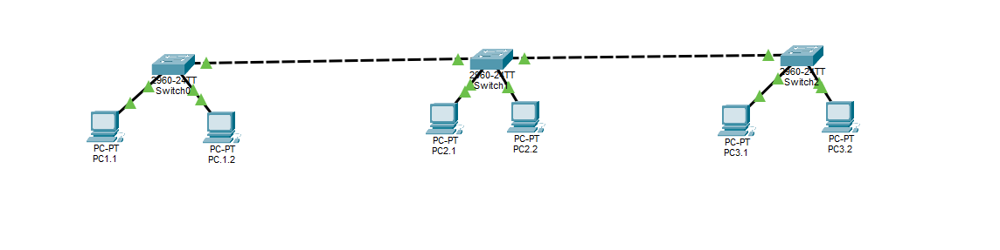Topología inicial con switches y hosts.
26.1 Verificación de conectividad inicial (red plana)
Se asignan direcciones IP a todos los hosts dentro de una misma red lógica y se verifica conectividad con ping. En una red plana, todos los puertos de acceso pertenecen a VLAN 1 (por defecto), por lo que existe un único dominio de broadcast.
Qué se comprueba: que la conectividad L2/L3 funciona antes de segmentar. Si aquí fallase, no se debería continuar con VLAN.
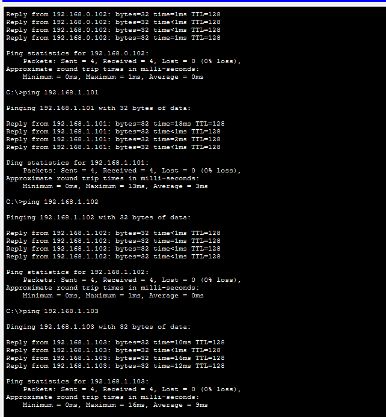Pings correctos en red sin VLAN (misma red lógica).
26.2 Creación de VLAN en los switches
Se crean VLAN 2 y VLAN 3 en los switches. Ejemplo de comandos:
enable
configure terminal
vlan 2
name grup2
vlan 3
name grup3
Se verifica la existencia de VLAN con show vlan brief, comprobando que aparecen en la base de datos del switch.
Importante: el identificador real es el número de VLAN; el nombre es descriptivo.
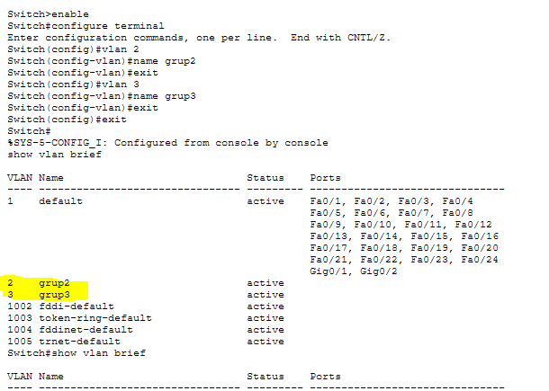Creación y verificación de VLAN mediante show vlan brief.
26.3 Asignación de puertos de acceso a cada VLAN
Se asignan puertos en modo access a VLAN 2 y VLAN 3. Ejemplo:
interface fa0/1
switchport mode access
switchport access vlan 2
interface fa0/2
switchport mode access
switchport access vlan 3
Se verifica nuevamente con show vlan brief observando qué puertos quedan asociados a cada VLAN.
Qué se consigue: separación de tráfico en capa 2. Cada VLAN es un dominio de broadcast independiente.
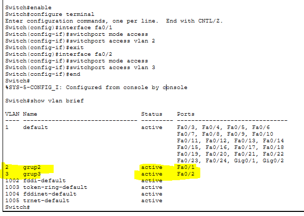Puertos asignados a VLAN 2 y VLAN 3.
26.4 Pruebas de aislamiento tras asignación de VLAN
Se realizan pings entre hosts que pertenecen a VLAN distintas. El resultado es fallo, ya que un switch de capa 2 no enruta entre VLAN. Aunque físicamente estén en el mismo switch, lógicamente pertenecen a redes separadas.
Conclusión técnica: la segmentación por VLAN está funcionando; el tráfico no atraviesa límites de VLAN sin un dispositivo de capa 3.
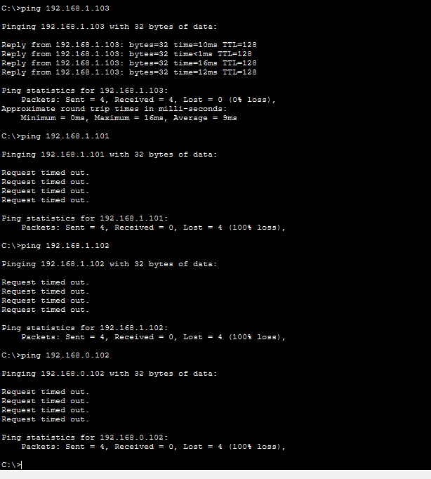Pings fallidos entre VLAN distintas (aislamiento correcto).
26.5 Configuración equivalente en SWITCH2
Se replica la creación de VLAN y la asignación de puertos en SWITCH2 para mantener consistencia en toda la infraestructura. La verificación con show vlan brief confirma que Fa0/1 pertenece a VLAN 2 y Fa0/2 a VLAN 3.
Buenas prácticas: misma numeración de VLAN y misma política de asignación de puertos en todos los switches.
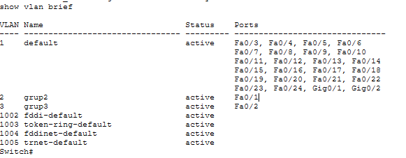VLAN y puertos en SWITCH2.
26.6 Configuración equivalente en SWITCH3
Se aplica la misma configuración en SWITCH3. Se valida con show vlan brief que las VLAN existen y que los puertos de acceso están correctamente asociados.
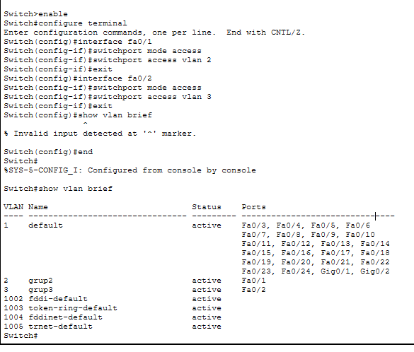VLAN y puertos en SWITCH3.
26.7 Verificación antes de trunk (VLAN aisladas por switch)
En este punto, aunque todos los switches tienen VLAN 2 y 3 creadas, los hosts de la misma VLAN en switches diferentes aún no se comunican si el enlace entre switches no es trunk. Sin trunk, un enlace inter-switch transporta únicamente la VLAN nativa (habitualmente VLAN 1) o se comporta como enlace de acceso.
Qué se demuestra: la VLAN no “viaja” entre switches si no se configura trunk 802.1Q.
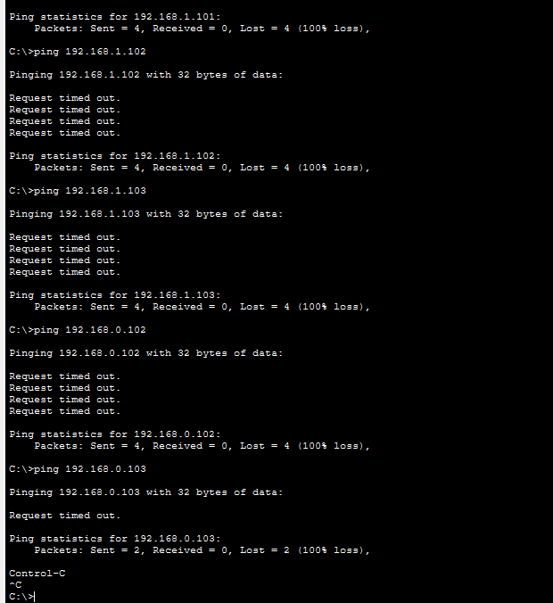Pings fallidos entre switches por ausencia de trunk.
26.8 Configuración trunk en SWITCH1
Se configura el puerto que conecta SWITCH1 con SWITCH2 en modo trunk, habilitando etiquetado 802.1Q. Comandos típicos:
interface fa0/x
switchport mode trunk
Se verifica con show interface trunk, observando estado trunking, VLAN permitidas y VLAN activas.
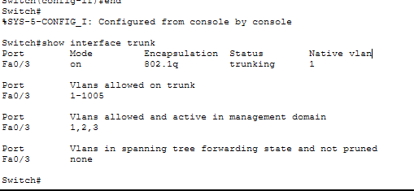Verificación de trunk en SWITCH1.
26.9 Configuración trunk en SWITCH2
En SWITCH2 (switch intermedio) se configuran en trunk los puertos que conectan con SWITCH1 y SWITCH3. Se verifica con show interface trunk que ambos enlaces están trunking y que transportan VLAN 2 y 3.
Nota técnica: en Packet Tracer puede aparecer “auto” en algún puerto si DTP negocia; en prácticas ASIR se recomienda fijar explícitamente switchport mode trunk.
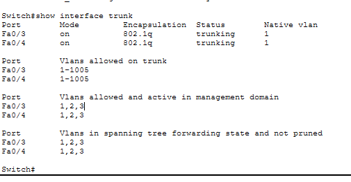Trunk en SWITCH2 (enlaces hacia SW1 y SW3).
26.10 Configuración trunk en SWITCH3
Se configura el enlace entre SWITCH3 y SWITCH2 en modo trunk y se verifica con show interface trunk. A partir de aquí las VLAN pueden propagarse a través de toda la red conmutada.
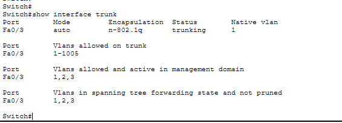Trunk activo en SWITCH3.
26.11 Prueba tras trunk (misma VLAN entre switches)
Se repiten los pings entre hosts de la misma VLAN ubicados en diferentes switches. Ahora funcionan porque los enlaces trunk transportan las VLAN mediante etiquetas 802.1Q. Sin embargo, entre VLAN distintas sigue fallando porque aún no hay enrutamiento L3.
Qué se demuestra: trunk correcto + VLAN extendidas por toda la infraestructura.
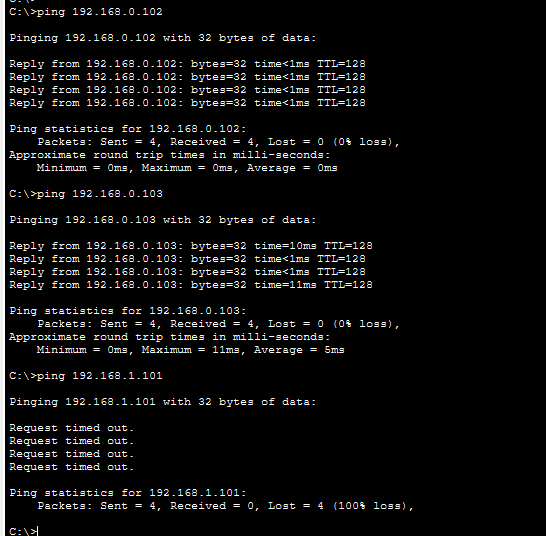Pings correctos dentro de la misma VLAN entre switches.
26.12 Router con dos interfaces (enrutamiento inter-VLAN clásico)
Se añade un router y se configuran dos interfaces físicas como puertas de enlace para cada VLAN/red. Verificación con:
show ip interface brief
Este enfoque requiere una interfaz física por VLAN, útil para comprender el enrutamiento inter-VLAN pero menos eficiente en entornos con muchas VLAN.

Interfaces del router configuradas y en estado up/up.
26.13 Prueba de comunicación entre VLAN (con router)
Se comprueba que hosts de VLAN distintas ya se comunican mediante ping, validando que el router está enrutando tráfico entre redes. Este punto confirma el funcionamiento de puerta de enlace en cada VLAN.
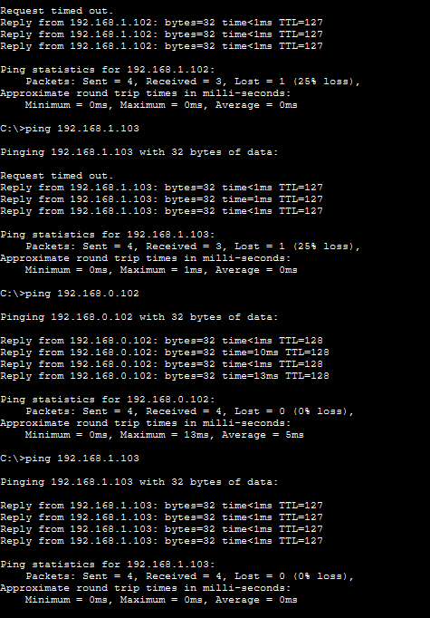Inter-VLAN funcionando con router (dos interfaces).
26.14 Topología con router (dos enlaces)
Captura de la topología con el router integrado mediante dos enlaces físicos hacia el switch, representando el esquema clásico de enrutamiento inter-VLAN con interfaces dedicadas.
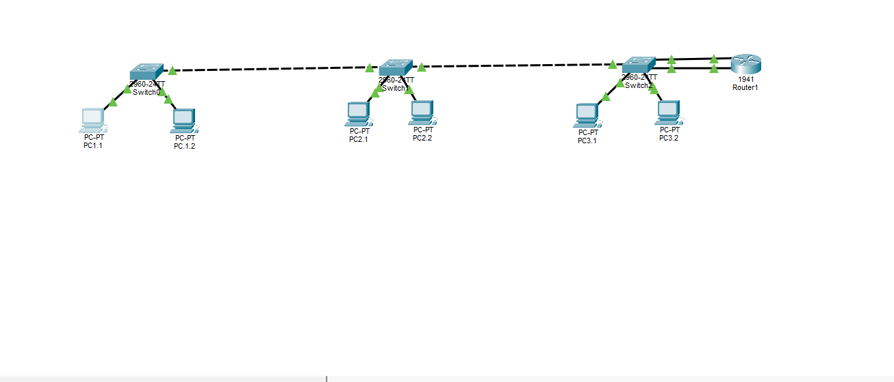Topología con router conectado mediante dos interfaces.
26.15 Preparación router-on-a-stick (un solo enlace físico)
Se elimina uno de los enlaces router-switch y se deja un único enlace físico. A partir de este punto, el router enruta varias VLAN por un solo enlace utilizando subinterfaces etiquetadas (802.1Q).
Ventaja: escalable: permite muchas VLAN con un solo puerto físico en el router.
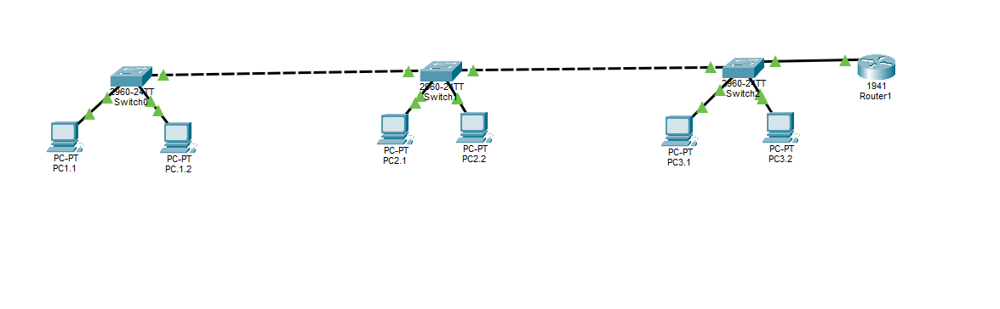Topología con un solo enlace router-switch (preparación RoaS).
26.16 Configuración de subinterfaces (router-on-a-stick)
Se crean subinterfaces en el router asociadas a cada VLAN con encapsulación dot1Q. Ejemplo:
interface g0/0.2
encapsulation dot1Q 2
ip address 192.168.0.1 255.255.255.0
interface g0/0.3
encapsulation dot1Q 3
ip address 192.168.1.1 255.255.255.0
Se valida con show ip interface brief que g0/0.2 y g0/0.3 están up/up.
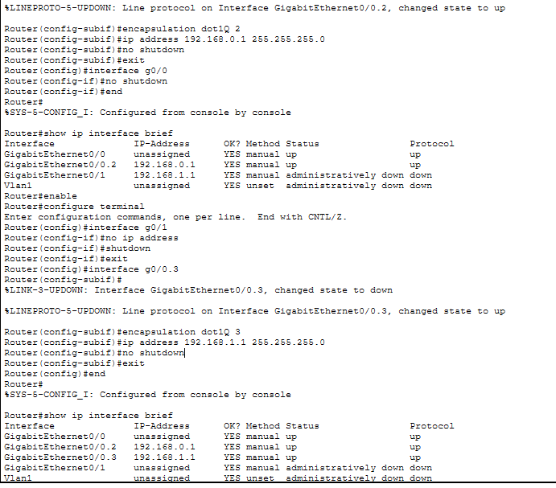Subinterfaces configuradas para VLAN 2 y VLAN 3.
26.17 Trunk entre switch y router
El puerto del switch conectado al router se configura en modo trunk para transportar las VLAN hacia el router. Verificación con:
show interface trunk
Punto crítico: sin trunk en el puerto hacia el router, el router no recibirá tramas etiquetadas y no habrá inter-VLAN.
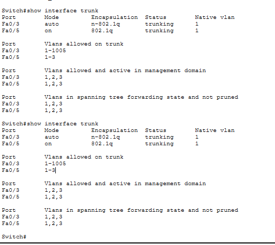Trunk activo entre switch y router.
26.18 Prueba final (router-on-a-stick operativo)
Se realizan pings entre hosts de VLAN distintas comprobando comunicación completa a través del router-on-a-stick. Este resultado valida: enlaces trunk correctos, subinterfaces configuradas y enrutamiento inter-VLAN funcional.
Comprobación adicional recomendada (opcional): show ip route para ver rutas conectadas a las redes de las VLAN.
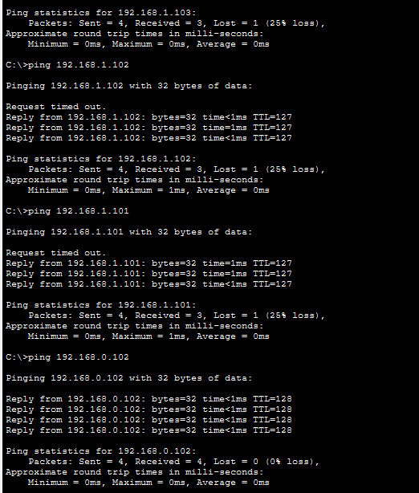Conectividad final entre VLAN mediante router-on-a-stick.
Conclusión
La práctica ha permitido implementar una infraestructura con segmentación mediante VLAN, verificando el aislamiento de tráfico en capa 2 y la reducción de dominios de broadcast. Se ha configurado trunk 802.1Q entre switches, permitiendo la extensión de VLAN por toda la red conmutada.
Posteriormente se ha habilitado enrutamiento inter-VLAN primero con dos interfaces físicas (enfoque clásico) y finalmente mediante router-on-a-stick, utilizando subinterfaces y un único enlace trunk hacia el switch. Esta última solución es la más utilizada en entornos reales por su escalabilidad y eficiencia cuando se trabaja con múltiples VLAN.
Las pruebas ICMP finales confirman conectividad completa entre hosts de distintas VLAN, validando que la segmentación y el enrutamiento inter-VLAN están correctamente implementados.